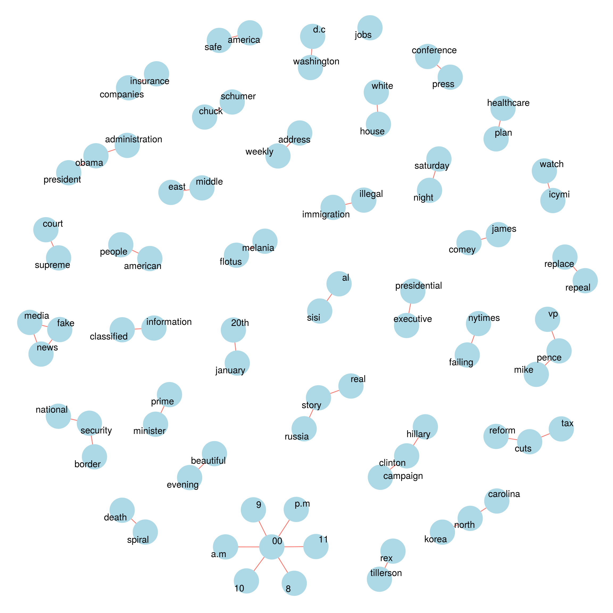

Trump vs Obama Twitter Analysis
Oliver Thistlethwaite
In this project, we will compare bigrams and word frequencies in twitter messages from Trump and Obama. First we will read in the required libraries.
library(dplyr)
library(knitr)
library(purrr)
library(twitteR)
library(tidytext)
library(stringr)
library(wordcloud2)
library(tidyr)
library(ggplot2)
library(igraph)
library(ggraph)To set up TwitteR, please see R Bloggers.
Now we’ll load the last 3200 tweets from each of Trump and Obama. Note the number of tweets will be less since we are excluding retweets.
trump_tweets <- userTimeline("realDonaldTrump", n=3200)
trump_tweets_df <- tbl_df(map_df(trump_tweets, as.data.frame))
obama_tweets <- userTimeline("BarackObama", n=3200)
obama_tweets_df <- tbl_df(map_df(obama_tweets, as.data.frame))For Trump
Bigrams
First we’ll look at bigrams contained in Trump’s twitter messages.
count_bigrams <- function(dataset) {
dataset %>%
filter(!str_detect(text, '^"')) %>%
mutate(text = str_replace_all(text, "https://t.co/[A-Za-z\\d]+|&", "")) %>%
unnest_tokens(bigram, text, token = "ngrams", n = 2) %>%
separate(bigram, c("word1", "word2"), sep = " ") %>%
filter(!word1 %in% stop_words$word, !word2 %in% stop_words$word) %>%
count(word1, word2, sort = TRUE)
}
visualize_bigrams <- function(bigrams) {
set.seed(5)
a <- grid::arrow(type = "closed", length = unit(0.1, "inches"))
bigrams %>%
graph_from_data_frame() %>%
ggraph(layout = "fr") +
geom_edge_link(aes(size = 10, color = "blue"), show.legend = FALSE, arrow = a) +
geom_node_point(color = "lightblue", size = 16) +
geom_node_text(aes(label = name, size = 20), repel = TRUE) +
theme_void() +
theme(legend.position="none")
}
trump_tweets_df %>% count_bigrams() %>% head(50) %>% visualize_bigrams()
Word Frequencies
Now we’ll count word frequencies and create a word cloud.
tweets <- trump_tweets_df
reg <- "([^A-Za-z\\d#@']|'(?![A-Za-z\\d#@]))"
tweet_words <- tweets %>%
filter(!str_detect(text, '^"')) %>%
mutate(text = str_replace_all(text, "https://t.co/[A-Za-z\\d]+|&", "")) %>%
unnest_tokens(word, text, token = "regex", pattern = reg) %>%
filter(!word %in% stop_words$word,
str_detect(word, "[a-z]"))
tweet_words <- tweet_words %>% group_by(word) %>% tally() %>% mutate(freq = n) %>% select(word, freq) %>% arrange(desc(freq))
tweet_words %>% head(20) %>% kable(row.names=TRUE)| word | freq | |
|---|---|---|
| 1 | fake | 47 |
| 2 | news | 47 |
| 3 | jobs | 43 |
| 4 | media | 43 |
| 5 | people | 42 |
| 6 | america | 39 |
| 7 | obamacare | 37 |
| 8 | election | 34 |
| 9 | time | 34 |
| 10 | country | 30 |
| 11 | democrats | 30 |
| 12 | join | 28 |
| 13 | president | 28 |
| 14 | american | 27 |
| 15 | trump | 27 |
| 16 | bad | 26 |
| 17 | healthcare | 26 |
| 18 | hillary | 25 |
| 19 | #draintheswamp | 23 |
| 20 | honor | 23 |
wordcloud2(tweet_words, size = 0.6)Sentiment
Now we’ll analyze sentiment.
trump_sentiment <- tweet_words %>%
inner_join(get_sentiments("bing"))
trump_sentiment %>%
group_by(sentiment) %>%
top_n(10, freq) %>%
arrange(freq) %>%
ungroup() %>%
mutate(word = reorder(word, freq)) %>%
ggplot(aes(word, freq, fill = sentiment)) +
geom_col(show.legend = FALSE) +
facet_wrap(~sentiment, scales = "free_y") +
labs(y = "Contribution to sentiment",
x = NULL) +
coord_flip()
For Obama
Bigrams
Now we’ll look at bigrams contained in Obama’s twitter messages.
count_bigrams <- function(dataset) {
dataset %>%
filter(!str_detect(text, '^"')) %>%
mutate(text = str_replace_all(text, "https://t.co/[A-Za-z\\d]+|&", "")) %>%
unnest_tokens(bigram, text, token = "ngrams", n = 2) %>%
separate(bigram, c("word1", "word2"), sep = " ") %>%
filter(!word1 %in% stop_words$word, !word2 %in% stop_words$word) %>%
count(word1, word2, sort = TRUE)
}
visualize_bigrams <- function(bigrams) {
set.seed(5)
a <- grid::arrow(type = "closed", length = unit(0.1, "inches"))
bigrams %>%
graph_from_data_frame() %>%
ggraph(layout = "fr") +
geom_edge_link(aes(size = 10, color = "blue"), show.legend = FALSE, arrow = a) +
geom_node_point(color = "lightblue", size = 16) +
geom_node_text(aes(label = name, size = 20), repel = TRUE) +
theme_void() +
theme(legend.position="none")
}
obama_tweets_df %>% count_bigrams() %>% head(50) %>% visualize_bigrams()Word Frequencies
Now we’ll count word frequencies and create a word cloud.
tweets <- obama_tweets_df
reg <- "([^A-Za-z\\d#@']|'(?![A-Za-z\\d#@]))"
tweet_words <- tweets %>%
filter(!str_detect(text, '^"')) %>%
mutate(text = str_replace_all(text, "https://t.co/[A-Za-z\\d]+|&", "")) %>%
unnest_tokens(word, text, token = "regex", pattern = reg) %>%
filter(!word %in% stop_words$word,
str_detect(word, "[a-z]"))
tweet_words <- tweet_words %>% group_by(word) %>% tally() %>% mutate(freq = n) %>% select(word, freq) %>% arrange(desc(freq))
tweet_words %>% head(20) %>% kable(row.names=TRUE)| word | freq | |
|---|---|---|
| 1 | senate | 68 |
| 2 | #doyourjob | 61 |
| 3 | leaders | 57 |
| 4 | president | 50 |
| 5 | obama | 48 |
| 6 | court | 43 |
| 7 | supreme | 42 |
| 8 | #actonclimate | 40 |
| 9 | climate | 39 |
| 10 | change | 35 |
| 11 | judge | 33 |
| 12 | garland | 27 |
| 13 | hearing | 25 |
| 14 | add | 21 |
| 15 | economy | 20 |
| 16 | progress | 20 |
| 17 | agree | 19 |
| 18 | join | 19 |
| 19 | fair | 18 |
| 20 | @ofa | 18 |
wordcloud2(tweet_words, size = 0.6)Sentiment
Now we’ll analyze sentiment.
obama_sentiment <- tweet_words %>%
inner_join(get_sentiments("bing"))
obama_sentiment %>%
group_by(sentiment) %>%
top_n(10, freq) %>%
arrange(freq) %>%
ungroup() %>%
mutate(word = reorder(word, freq)) %>%
ggplot(aes(word, freq, fill = sentiment)) +
geom_col(show.legend = FALSE) +
facet_wrap(~sentiment, scales = "free_y") +
labs(y = "Contribution to sentiment",
x = NULL) +
coord_flip()